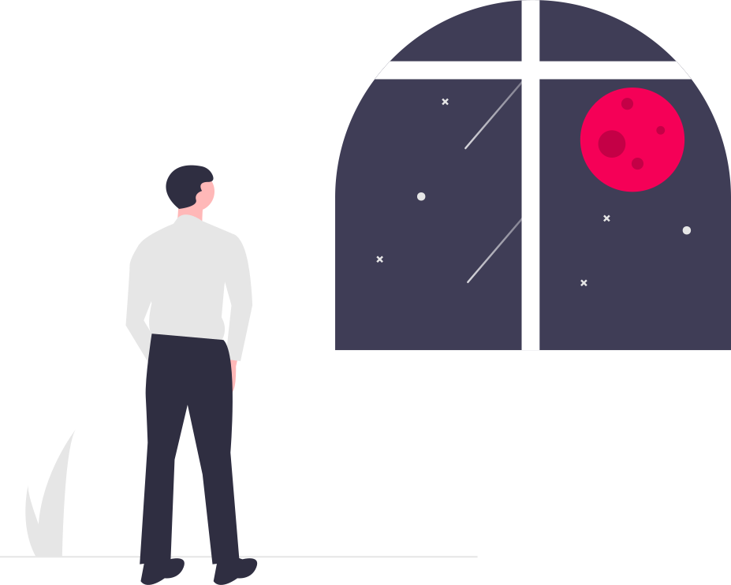
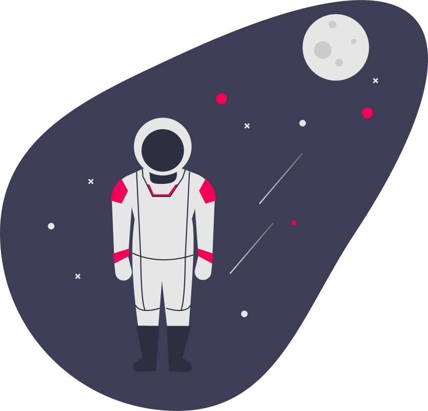
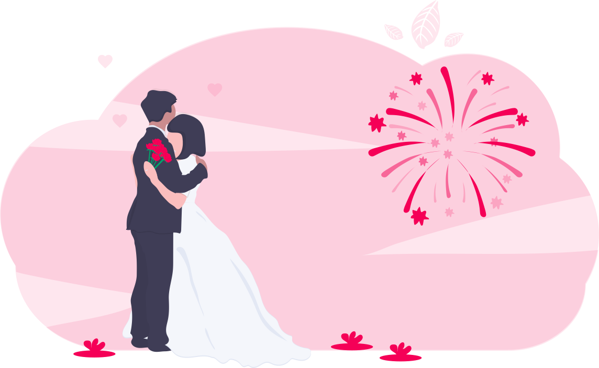

Definitivamente tu eres la unica que me ha hecho pedirle deseos a las estrellas y pues esta bien
no esta nada mal pedirles un futuro a tu lado ma moi, sabes que yo no soy perfecto pero busco la manera
de poder quedar bien contigo, aunque no sea muy seguido, no lo demuestro tanto, pero te tengo en mi mente
todo el dia amorsito....

Esos dias que tanto deseo que vuelvan a pasar, en los que lo que nos importaba era esperar el recreo para
vernos, y poder estar juntos es lo que mas deseo mi vida, y pues espero en Diosito que el proximo año pueda pasar
todo el tiempo que sea posible contigo, que eres el amor de mi vida
Sin duda alguna te mereces el cielo y cada una de las estrellas que alli estan, ma moi eres la chica mas linda que
pudo ofrecerme la vida, y pues ultimamente no me he comportado como la princesa que eres, dejame decirte que eso por
poquitos lo ire sacando de mi vida, ya que te mereces que te traten como un Reina, lo cual te quedaria muy chico...

A pesar de que estamos a una distancia bastante corta no se no es posible vernos, ya que no quieres que me exponga
y pues esta bien, seria mejor vernos una vida despues de esto que unos minutos y que sean los ultimos, y pues amor,
no quiero perderte por nada del mundo, ese es mi mas grande miedo, el de que te pueda perder por alguna cosa que haga,
y pues aja me comportare como se debe...
Bueno, lo mejor para el final, Jeimy quiero llevarte hasta el altar y pues de ahi tener una vida de aventuras, ya que
contigo todo es mas lindo, hasta los problemas no parecen problemas si tu estas aqui conmigo vida mia, quiero que sepas
que te amo con todo mi corazon y quiero que sepas que eres el amor de mi vida, y que por ti doy hasta mi ultimo esfuerzo
para que estes bien amor... Te amo mi vida ....

Definitivamente tu eres la unica que me ha hecho pedirle deseos a las estrellas y pues esta bien
no esta nada mal pedirles un futuro a tu lado ma moi, sabes que yo no soy perfecto pero busco la manera
de poder quedar bien contigo, aunque no sea muy seuido, no lo demuestro tanto, pero te tengo en mi mente
todo el dia amorsito....